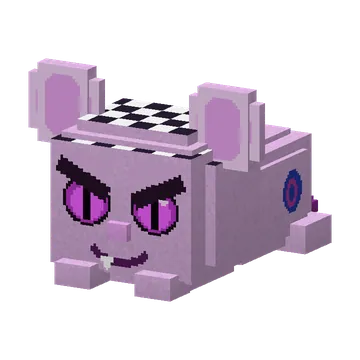
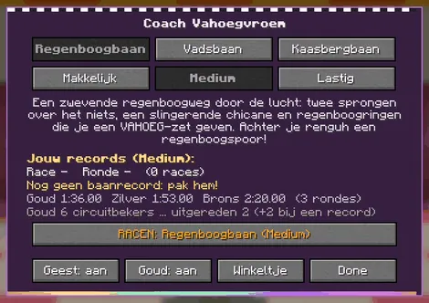
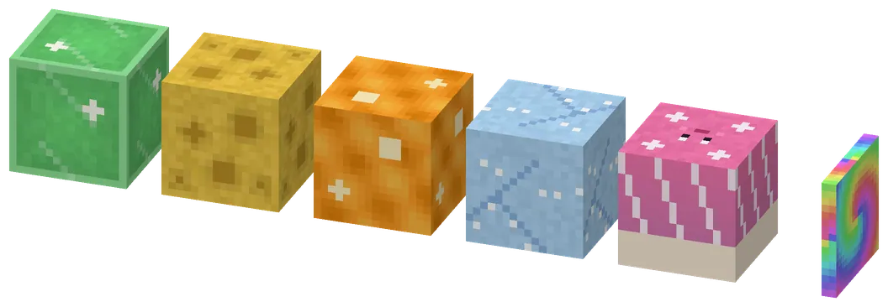
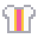
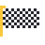

Racing on three tracks (Regenboogbaan, Vadsbaan, Kaasbergbaan) with Coach Vahoegvroem.
Racen op drie banen (Regenboogbaan, Vadsbaan, Kaasbergbaan) met Coach Vahoegvroem.

LevelsNiveaus
| MakkelijkMakkelijk | MediumMedium | LastigLastig | |
|---|---|---|---|
| Race guhRenguh | calmrustig | aszoals | faster, but turns slowlysneller, maar draait langzaam |
| Mika-pikkersMika-pikkers | 2 | 4 | 6 |
| Rolling knabbelsRollende knabbels | fewweinig | moremeer | lotsveel |
| Off the roadVan de weg | wide rails: back to where you werebrede vangrails: terug naar waar je was | back to the last ringterug naar de laatste ring | back to the last ringterug naar de laatste ring |
| VAHOEG padsVAHOEG-pads | gold and silvergoud en zilver | gold and silvergoud en zilver | only goldalleen goud |
The old guhracebaan got the same three levels. Lastig pays 50% more.
De oude guhracebaan kreeg dezelfde drie niveaus. Lastig betaalt 50% meer.

Coach Vahoegvroem
Pick a track and a level, see your records, the track record, the medal times and the coins, switch the ghosts on or off, and open the shop. Every track has boards for the whole race and the fastest lap, per level (18 in all), and six of them float at the grandstands.
Kies een baan en een niveau, zie je records, het baanrecord, de medailletijden en de munten, zet de geesten aan of uit, en open het winkeltje. Elke baan heeft borden voor de hele race en de snelste ronde, per niveau (18 in totaal), en zes daarvan zweven bij de tribunes.

Track blocksBaanblokken
Regenboogweg (7 colours), kaasweg, glibberige kaassaus, kaasbergijs, the stuiterpaddenstoel and the regenboog-boostring.
Regenboogweg (7 kleuren), kaasweg, glibberige kaassaus, kaasbergijs, de stuiterpaddenstoel en de regenboog-boostring.
Prizes: clothesPrijzen: kleding
 Circuithelmpje 5 circuitbekers
Circuithelmpje 5 circuitbekers
Vahoeg-racepak 10 circuitbekers
Geblokte vlagcape 7 circuitbekers
Highscores in the GuhdexHighscores in de Guhdex
- Regenboogbaan makkelijk: race
- Regenboogbaan makkelijk: ronde
- Regenboogbaan medium: race
- Regenboogbaan medium: ronde
- Regenboogbaan lastig: race
- Regenboogbaan lastig: ronde
- Vadsbaan makkelijk: race
- Vadsbaan makkelijk: ronde
- Vadsbaan medium: race
- Vadsbaan medium: ronde
- Vadsbaan lastig: race
- Vadsbaan lastig: ronde
- Kaasbergbaan makkelijk: race
- Kaasbergbaan makkelijk: ronde
- Kaasbergbaan medium: race
- Kaasbergbaan medium: ronde
- Kaasbergbaan lastig: race
- Kaasbergbaan lastig: ronde
See alsoZie ook
 Het Guh-CircuitStructuresBouwwerken
Het Guh-CircuitStructuresBouwwerken Coach VahoegvroemCharactersPersonages
Coach VahoegvroemCharactersPersonages Clothing set: Het Guh-CircuitKledingset: Het Guh-CircuitClothesKleding
Clothing set: Het Guh-CircuitKledingset: Het Guh-CircuitClothesKleding